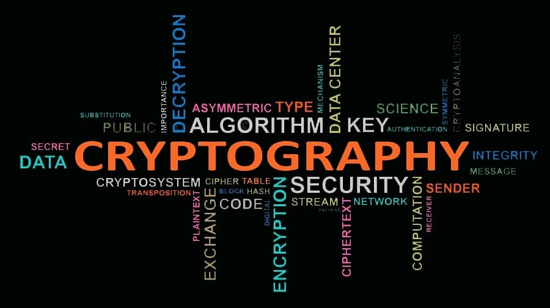

Explore All Club Activities
Cybersecurity Club Workshop
As members of the Cybersecurity Club, we organize a wide range of activities and events focused on cybersecurity and IT in general. Every week, we host engaging workshops, informative lectures, and hands-on activities designed to enhance your skills and knowledge in the field. Apart from learning, we also offer fun and exciting events, including competitions, challenges, and giveaways with amazing prizes for the winners. By joining us, you'll not only gain valuable insights into the world of cybersecurity, but you'll also become part of a vibrant community.
join us to become a member of the Cybersecurity Club and be a part of all the exciting events!
FutureSec Hackathon
Students, professionals, and cybersecurity enthusiasts come together for the thrilling FutureSec Hackathon to compete in addressing real-world security problems. Finding and fixing system vulnerabilities, improving digital security, and encouraging innovation in the cybersecurity space are the main goals of this hackathon. Participants will collaborate in groups to create innovative solutions, take part in ethical hacking exercises, and explore emerging technologies. The FutureSec Hackathon offers a unique chance to learn, work with others, and showcase your cybersecurity skills through workshops, hands-on sessions, and mentorship from industry professionals.
join us to test your skills, collaborate with experts, and compete for amazing prizes!
Data Privacy and GDPR
The European Union has put in place a comprehensive set of legislation known as the General Data Protection Regulation (GDPR) to protect personal data. It gives people more control over their information by regulating how businesses gather, store, and use the personal data of EU citizens. GDPR holds companies accountable for violations and emphasizes accountability, transparency, and consent. By complying with GDPR, businesses can build trust with customers, protect privacy, and ensure they meet legal obligations in a world increasingly reliant on data-driven technologies.
join us to learn how GDPR safeguards personal data and ensures privacy rights!
Introduction to Cryptography
The process of using codes and ciphers to secure data and communication is known as cryptography. To prevent unwanted access and guarantee the confidentiality, integrity, and validity of the data, plain text is transformed into unintelligible ciphertext. For digital systems like cloud storage, email, and online banking to be secure, cryptography is essential. It protects sensitive data from being intercepted or altered during transmission by using mathematical algorithms and key-based encryption techniques. Cryptography remains an essential area of study in computer science and cybersecurity, helping to protect our digital lives as technology and cyberthreats change.
join us to discover the basics of cryptography and its importance in data security!